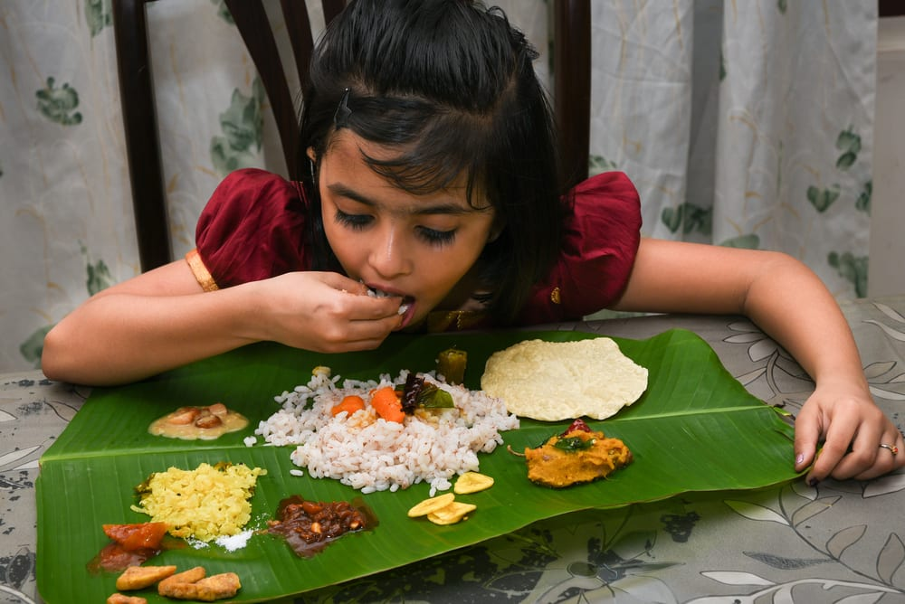

8 Indian Traditions Which Are Actually Good For Your Health
If you look back in India’s history, you will find it is full of traditions and customs. These traditions might look ordinary but have several health benefits attached to them. These traditions are still practiced and hold a similar relevance, as they did back in those days.
1. Ear Piercing
Several researches have shown than walking barefoot on grass can help improve sleep, reduce pain, decrease muscle tension and lower stress levels.
2.Walking barefoot on grass
You might have noticed your grandparents storing and drinking water from copper utensils. Drinking water from a copper vessel can boost your immune system, aid digestion, decrease wound healing time, strengthen joints and improves digestion as well.
3.Drinking water in copper utensils

While wearing silver jewelry helps boost blood circulation, aiding in cold and flu prevention and wound healing, gold jewelry too has its own set of benefits. Wearing gold regulates body temperature, reduces stress and attracts positive energy.
4.Jewelary
